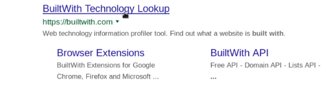

it is important to know tech used by webpage , beacuse every technology , framework , language, server version have their own vulnerability . so it helps us to exploite
1. builtwith.com : BuiltWith Technology Lookup

search tesla.com
it will show all technologies on which tesla.com is build
2. wappalyzer : add this extension to browser , it will show web tech used by web page


3.whatweb : it is builtin linux tool